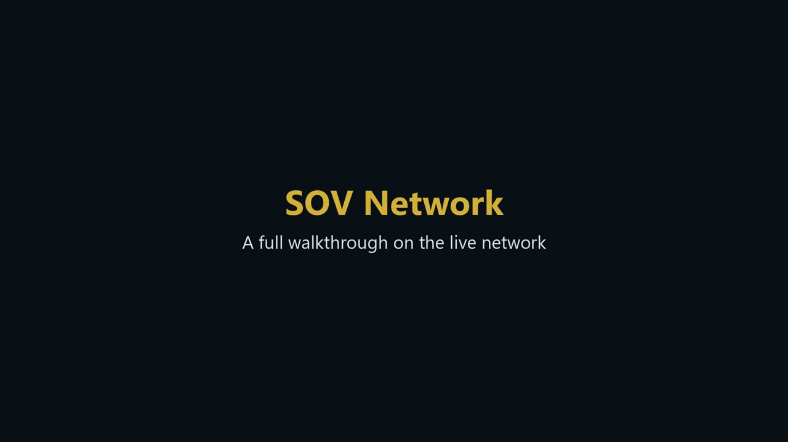
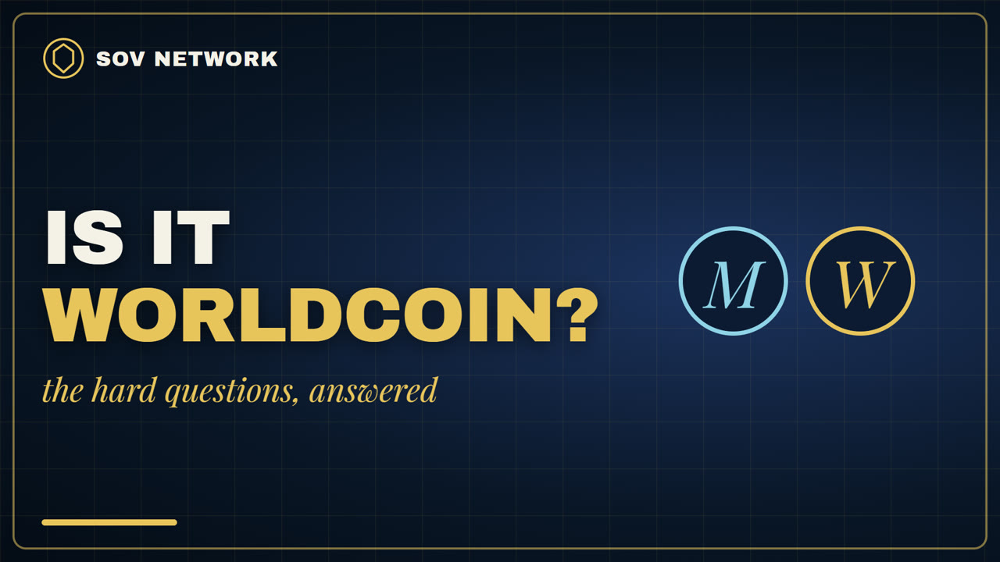
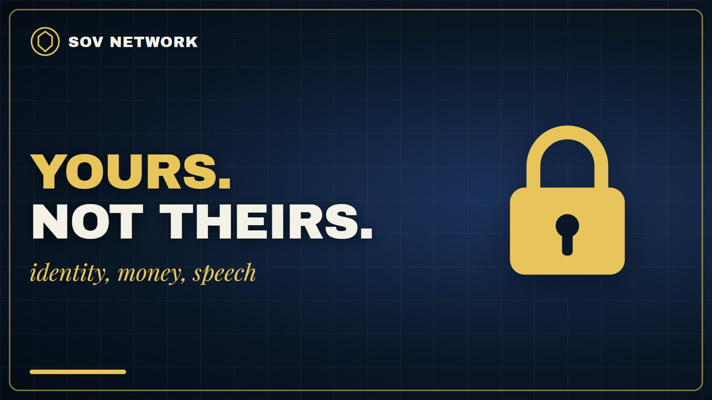
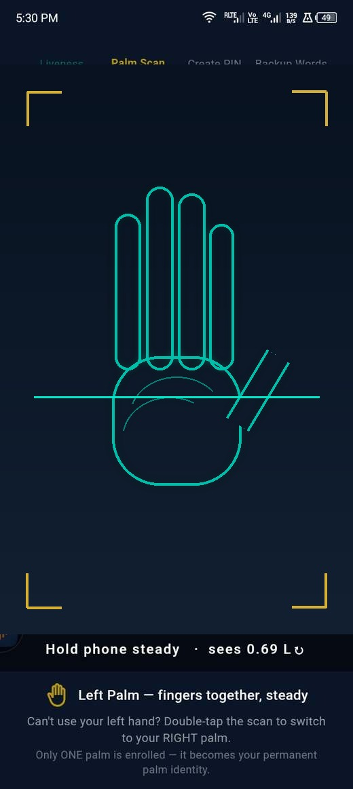
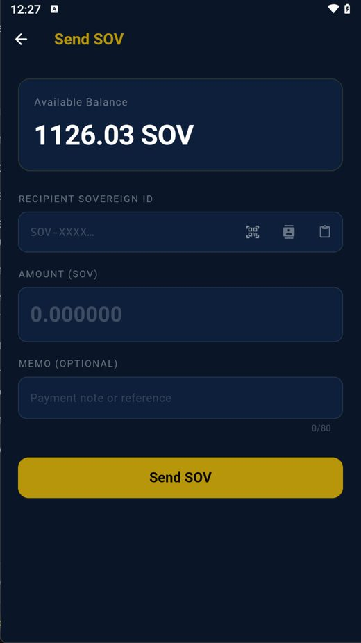
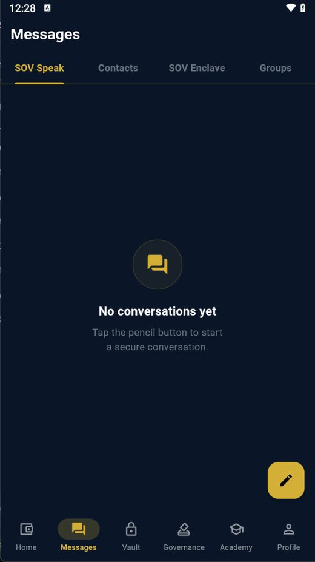
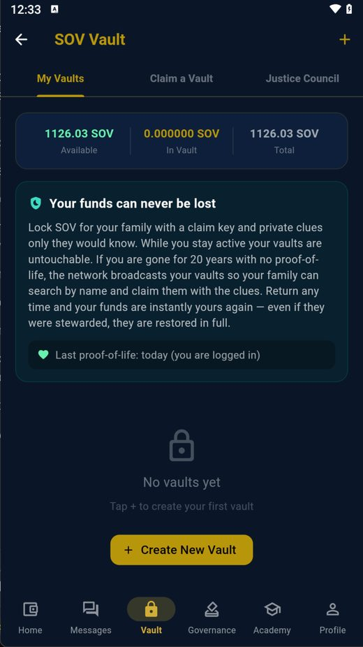
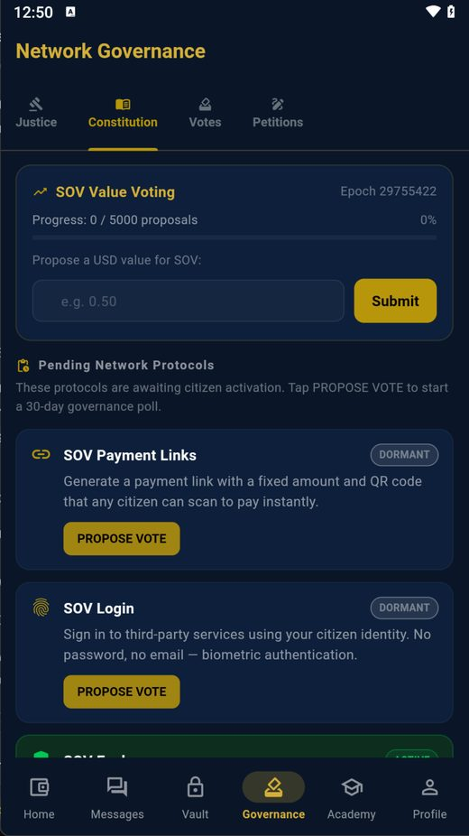

One human, one wallet. Own your identity, your money, your messages, and your voice in how the rules are written — on a network no company controls and no government depends on.
SOV isn't a blockchain — it's a sovereign, proof-of-personhood mesh: self-contained nodes, one human one wallet, no central operator, no app store.
Real problems people search for every day, and what SOV Network does about them.
With most crypto, a lost key means the money is gone for good. SOV gives you 12 words, a backup file and up to five guardians who can move your account to a new key.
How you get back in →A built-in Vault: choose the amount, a release date and a beneficiary, with family keys as a fallback.
How inheritance works →End-to-end encrypted, no phone number or email, and nodes keep no message content.
What is kept, precisely →One real person, one account, checked on your own phone. No bot farm can make a thousand of them.
How the check works →Not a blockchain — a Sovereign Mesh. Self-contained nodes gossip peer-to-peer with no centre, and its one new idea is proof of personhood: one human, one wallet, proven by a palm and face check made on your own phone. Identity, messaging, justice, and governance on one protocol.
Your palm and face prove you are one unique person — the photos never leave your phone; only protected numeric fingerprints do. The network refuses a second enrolment, so nobody joins a hundred times. Everyone counts equally.
Send SOV in seconds. The fee is 0.1% of the payment, never more than 1 SOV, set by citizen vote, and it goes to the people running the network, not a bank. Fixed 50,000,000 supply.
Messages route through standard ports and work behind firewalls; nodes pass on only encrypted messages and keep none of them. Disputes are settled by randomly-selected citizen juries, not courts.
Self-contained nodes, no central operator list, no single switch to flip. Anyone can run one, and earn for keeping the network alive.
Recorded on the live network: joining with your palm, sending SOV, messages, the exchange, the vault, votes, running a node and Sign in with SOV.

Every part of the app, step by step, on the real network.
Watch on YouTube →
Every doubt people raise, asked straight and answered straight: Worldcoin, your palm and face data, the free 1,000 SOV, whether it was tested, why it is not on the app stores, scams, privacy and who sets the value.
Watch on YouTube →
Identity, money, speech and law, owned by the people who use them.
Watch on YouTube →Follow: YouTube · TikTok · Reddit. The videos open on those sites; this page loads nothing from them.
Real screens from the SOV app. The phone app and the desktop app look the same — only the desktop can also run a Full Node.

1
1 2 3
1 2
1 2
1Self-contained apps for every platform. Verify the signature — no host is trusted.
Install directly.
Download APK
Portable — also runs as a full node.
Download for Windows
Also runs as a full node. Unsigned/ad-hoc — first launch needs right-click → Open.
Apple Silicon
·
Intel
Run a node or the wallet.
All downloads & source
Every release ships a signed manifest (currently one release key; threshold signing comes later) — the signature is inside it
(sigs, ed25519). Check it before installing.
signed manifest
·
checksums
GitHub down or blocked where you are? These files are also seeded over BitTorrent by a network node (with GitHub as a web seed) — no account needed. Get the magnet links →
Everything is public — read before you install, and host a node yourself.
Why SOV exists, how to use it, and the protocols behind it — identity, fees, governance, justice, SOV Link.
Read the Knowledge Bank →Host a node on Oracle / Google / AWS or your own Windows, macOS or Linux computer — including the firewall rules that actually matter — and earn the operator payout.
Read the operator guide →